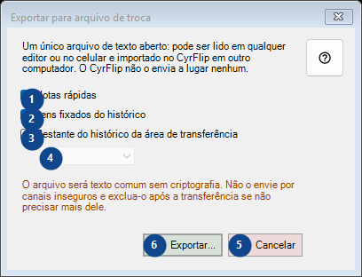
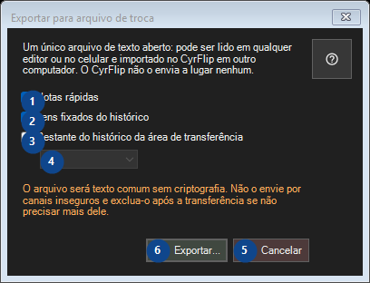

Exportar para arquivo de troca
Para que serve
Leia as explicações numeradas, escolha os valores necessários e continue com o comando da janela.


Ordem de utilização
Leia as explicações numeradas, escolha os valores necessários e continue com o comando da janela.
Elementos
1. Notas rápidas
Use este comando para a ação indicada. Leia qualquer confirmação antes de aceitar.
Os seus atalhos2. Itens fixados do histórico
Use este comando para a ação indicada. Leia qualquer confirmação antes de aceitar.
Os seus atalhos3. Restante do histórico da área de transferência
Use este comando para a ação indicada. Leia qualquer confirmação antes de aceitar.
Os seus atalhos4. Um único arquivo de texto aberto: pode ser lido em qualquer editor ou no celular e importado no CyrFlip em outro computador. O CyrFlip não o envia a lugar nenhum.
Escolha ou introduza o valor da etiqueta adjacente. Verifique-o antes de continuar. Este elemento não está disponível. Ative primeiro a função ou selecione uma entrada.
Os seus atalhos5. Cancelar
Use este comando para a ação indicada. Leia qualquer confirmação antes de aceitar.
Os seus atalhos6. Exportar...
Use este comando para a ação indicada. Leia qualquer confirmação antes de aceitar.
Os seus atalhos